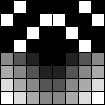
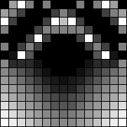
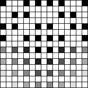
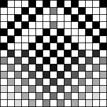

はじめに
弱点として指摘した部分を改良したので、その件です。
改造 take1
v1 と v2 の値が近い時は、単純な Bi-Linear にように4隅を混ぜた方がマシになります。
- https://github.com/yoya/image.js/blob/v1.3/fcbi.js#L241
if (Math.abs(v1 - v2) < TM) { // yoya custom var rgba = meanRGBA(meanRGBA(rgba1, rgba4), meanRGBA(rgba2, rgba3)); } else { if (v1 < v2) { var rgba = meanRGBA(rgba1, rgba4); } else { var rgba = meanRGBA(rgba2, rgba3); } }
結果。
| テスト画像 | ドット拡大表示 |
|---|---|
|  | |
 |
|
 |
|
|  |
実際のイラストでも線が途切れる箇所が減っています。
| 元画像 | オリジナル | 改造版 |
|---|---|---|
 |
 |
改造 take2
エッジ判定になっても v1(1-4) と v2(2-3) の差がない時は非エッジとして処理する改造をしたら、いい感じになりました。
https://github.com/yoya/image.js/blob/v1.3/fcbi.js#L241
if (((v1 < TM) && (v2 < TM) && (Math.abs(p1 - p2) < TM)) || (Math.abs(v1 - v2) < TM)) { // yoya custom if (edgeMode) { var rgba = [0, 128, 0, 255]; // green } else { // 非エッジの処理
結果
| テスト画像 | ドット拡大表示 |
|---|---|
 |
 |
|  | |
実際のイラストでも線が途切れる箇所が減っています。
| オリジナル | 改造 take1 | 改造 take2 |
|---|---|---|
|